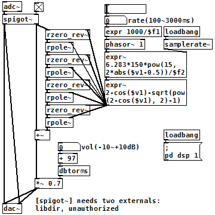

フェイザー（Pure Data パッチ）
2017年10月16日 カテゴリー：Pure Data
Pure Data(Pd)でのオールパスフィルター(APF)は[rzero_rev~]と[rpole~]を組み合わせて作ります。原音とAPFを通した音を足せばフェイザーとなります。参考ページ→Making and using all-pass filters
（このパッチをダウンロード）
[rzero_rev~]と[rpole~]に入れる係数計算は、1次ローパスフィルターのときの[rpole~]用計算式をそのまま使うとうまくいきました。上側の[expr~]が2π*fc/fsの計算ですが、周波数はMXR Phase 90を参考に150～2250Hzで変化するようにしています。
Uni-Vibeもフェイザーと似た仕組みなので再現できそうなのですが、いまいち係数の設定がうまくいきませんでした。今後使いたくなったときに作るかもしれません。
【フィードバックについて】
Phase 90ではAPF最終段から2段目にフィードバックがかかっていますが、Pdで同じことをやろうとすると、「error: DSP loop detected」と出てしまいます。このエラーを回避するには、[send~][receive~]を使い1ブロックサイズ分遅延を発生させます。参考ページ→What's A "DSP-Loop"?
今回のフェイザーでは上記の方法だと出音がアナログの場合とは違うように感じたので、結局フィードバックは入れないことにしました。[block~]でブロックサイズを減らし遅延を少なくする方法もありますが、CPU負荷を考えると現実的ではないと思います。